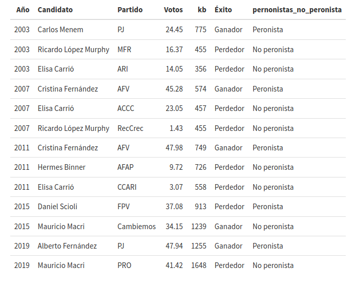
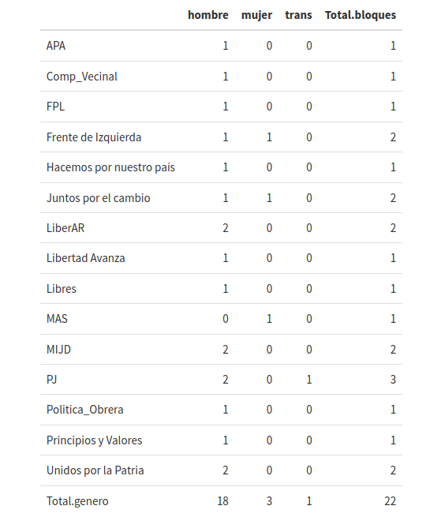

El capital burocrático de los aspirantes a la presidencia de Argentina en 2023
Las elecciones primarias en Argentina del 14 de agosto de 2023 reflejaron el descontento debido al manejo de la política fiscal durante la pandemia de COVID-19 y la renegociación de la deuda con el FMI, contraída durante el gobierno de Mauricio Macri (2015-2019). El presidente Alberto Fernández (2019-2023) heredó el país con una tasa de inflación de alrededor del 60% anual, una crisis cambiaria significativa y la posibilidad de incumplir con los acreedores de la deuda externa. La discordia en el gabinete de Fernández sobre las negociaciones con el Fondo Monetario Internacional (FMI) resultó en la destitución de Martín Guzmán como ministro de Economía, reemplazado por el entonces presidente de la Cámara de Diputados, Sergio Massa, quien prometió cambios estructurales para resolver la situación.
La desaprobación al gobierno de Fernández se acentuó tras perder las elecciones legislativas de 2021, donde obtuvo el 35% de los votos frente a la coalición “Unidos por el Cambio,” que se convirtió en la fuerza principal con el 43% de los votos. Además, la vicepresidenta Cristina Fernández fue declarada culpable de delitos relacionados con el mal manejo de recursos públicos, aunque no pudo cumplir su condena debido a apelaciones y el fuero constitucional. Todo esto fomentó una confrontación más intensa por parte de sus detractores.
El bloque de derecha “Juntos por el Cambio,” que gobernó durante el mandato de Macri, se reorganizó y logró el segundo lugar en las elecciones PASO con la candidatura de Patricia Bullrich, superando al ministro de Economía, Sergio Massa, del bloque oficialista “Juntos hacemos historia.” Sin embargo, el primer lugar en las PASO fue para la propuesta neoliberal “La Libertad Avanza” de Javier Milei, que obtuvo el 30% de los votos. Según las encuestas, algunos argentinos podrían seguir a este político de extrema derecha y caer en promesas mágicas pero insostenibles, lo que podría poner fin al peronismo y desencadenar la desaparición del Banco Central, ministerios de gobierno, programas sociales y la moneda argentina. ¿No hemos visto esto antes en las décadas de los 70 y 90 con el neoliberalismo?
Los datos de las PASO muestran que las diferencias entre los tres bloques son del 2.8%, lo que no indica una tendencia clara a favor de ninguno. Milei deberá negociar con el bloque de Macri para obtener suficientes votos del bloque no peronista, mientras que Massa podría buscar acuerdos con algunos grupos de “Juntos por el Cambio” y sectores de izquierda para mejorar su competitividad. En cualquier caso, la situación sugiere que algo debe cambiar en Argentina.
En n0dnnos hemos propuesto comparar los perfiles de los 22 aspirantes a la candidatura presidencial que participaron en las elecciones PASO, con miras a la contienda programada para el 22 de octubre de 2023. Estos aspirantes provienen de diversas listas y bloques, y nuestro objetivo es ofrecer una herramienta de análisis basada en la medición del capital burocrático, lo que nos permitirá evaluar su experiencia en cargos directivos, tanto dentro como fuera del Estado.
1. Los 22 aspirantes a la presidencia de Argentina
Argentina, un país con una larga historia de altibajos económicos y problemas políticos crónicos, ha vivido una sorpresa en estas elecciones. Se trata de un candidato que carece de experiencia en cargos políticos tradicionales pero que tiene fuertes vínculos con gobiernos de derecha y propuestas poco convencionales.
Desde el año 2003, las elecciones presidenciales en Argentina han alternado entre candidatos peronistas y no peronistas, con enfoques distintos en políticas sociales y económicas. La crisis del 2001 dificultó la creación de políticas de Estado a largo plazo, ya que la rápida sucesión de gobiernos impidió una continuidad en las políticas públicas.
Dentro del peronismo, existen dos corrientes principales. Por un lado, está el peronismo nacionalista de izquierda, representado por figuras como Néstor Kirchner, Cristina Fernández, Daniel Scioli y Sergio Massa. Estos gobiernos se caracterizaron por la nacionalización de sectores estratégicos, la promoción de la industria nacional y mejoras en los derechos sociales. Sin embargo, incluso con la estabilidad económica lograda durante el gobierno de Kirchner, se vieron afectados por escándalos de corrupción, especialmente entre funcionarios cercanos a Cristina Fernández.
Por otro lado, está el peronismo neoliberal liderado por Carlos Menem (1989-1999), que implementó una serie de reformas orientadas al mercado, incluyendo la privatización de empresas estatales y la desregulación financiera. También estableció un régimen de convertibilidad peso-dólar de Estados Unidos para combatir la hiperinflación de los años ochenta, pero esto tuvo un alto costo en la producción industrial, que cayó del 42% al 28% del PIB, y un aumento significativo en la deuda externa, que pasó de 65 mil millones a 151 mil millones de dólares. La presidencia de Menem sentó las bases para la crisis financiera que estalló en 2001 durante el mandato de Fernando de la Rúa, su sucesor.
En la Tabla 1, se pueden observar los resultados de las últimas cinco elecciones, donde predominan los bloques peronistas y no peronistas. El capital burocrático promedio de los candidatos ganadores es de 781.53 kb, con un porcentaje promedio de votos obtenidos del 39.96%.

Desde 2009, las elecciones PASO han sido el método democrático para seleccionar candidatos presidenciales y legislativos. Para calificar, los aspirantes deben obtener al menos el 1.5% de los votos emitidos. En estas elecciones primarias, Sergio Massa, del bloque “Unión por la Patria”, sorprendió al lograr el tercer lugar con un 27.27% de los votos, lo que plantea dudas sobre el futuro del proyecto kirchnerista. La credibilidad de este proyecto se ha visto afectada por la gestión de la crisis financiera heredada del gobierno de Mauricio Macri y por los escándalos de corrupción que involucran a la Vicepresidenta y ex Presidenta, Cristina Fernández, en el caso del Grupo Austral. A pesar de las sospechas de mal uso de recursos públicos, estas acusaciones no han tenido un impacto significativo debido al fuero de la vicepresidenta y a las numerosas apelaciones presentadas.
Por otro lado, Patricia Bullrich, candidata del bloque de derecha “Juntos por el Cambio”, se ubicó en el segundo lugar de las preferencias con un 28.28%, según las encuestas finales. La ex ministra de Seguridad, Seguridad Social y Trabajo durante el gobierno de Macri logró recuperar la confianza en la propuesta neoliberal, a pesar de los resultados desfavorables relacionados con el endeudamiento interno y la controvertida gestión de la negociación con los fondos buitre en la Bolsa de Valores de Nueva York.
La mayor sorpresa provino de la propuesta neoliberal radical de Javier Milei, quien obtuvo un 30.04% de las preferencias. Sus propuestas de privatización de los bienes nacionales, los servicios de salud y educación, la eliminación del Banco Central y la dolarización de la economía argentina llamaron la atención de los votantes. Sin embargo, muchos olvidaron que medidas similares ya se habían implementado durante el gobierno de la dictadura militar y el de Menem, lo que resultó en crisis financieras y políticas recurrentes. A pesar de sus estrechas conexiones con políticos de esa época, Milei se presenta como el principal crítico de la “casta peronista”. Esta crítica ha generado divisiones entre quienes lo respaldan y quienes lo culpan por la crisis financiera actual.
1.1 Capital burocrático por bloques y partidos políticos
La experiencia en cargos directivos es fundamental para conocer las capacidades relativas al manejo de la administración pública y del gobierno. Este factor que denominamos capital burocrático (kb), permite medir dicha experiencia por bloque, partido y aspirante. En las elecciones primarias argentinas se registraron 22 aspirantes dentro de 15 bloques de partidos políticos.
Se presentaron 18 hombres (81.8 %), 3 mujeres (13.6%) y 1 mujer trans (4.5%), sin embargo, de los cinco candidatos que pasarán a contender en la elección presidencial, 3 de ellos son varones (60%) y 2 mujeres (40%), como se describirá más adelante.
